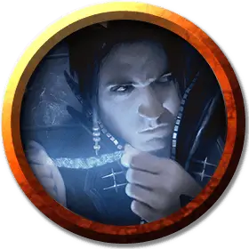

Маг разума
Mind Mage
Средний Гуманоид (Любая раса), нейтрально-злой

Класс Доспеха 12 (15 с доспехом мага)
Хиты 49 (11к8)
Скорость 30 футов
| мод | спас | ||
|---|---|---|---|
| СИЛ | 10 | +0 | +0 |
| ЛОВ | 14 | +2 | +2 |
| ТЕЛ | 10 | +0 | +0 |
| мод | спас | ||
|---|---|---|---|
| ИНТ | 20 | +5 | +8 |
| МДР | 15 | +2 | +5 |
| ХАР | 16 | +3 | +3 |
Навыки Магия +8, Обман +6, Проницательность +5, Убеждение +6
Чувства пассивное Восприятие 12
Языки Общий, плюс любые четыре языка
Опасность 5 (1800 опыта)
Бонус мастерства +3
Особенности
Врожденное колдовство (псионика). Базовой характеристикой заклинаний мага разума является Интеллект (Сл спасброска от заклинания 16). Он может использовать следующие заклинания, без компонентов:
• Неограниченно: кодировка мыслей [encode thoughts], дружба [friends];
• 3/день каждое: удержание личности [hold person], обнаружение мыслей [detect thoughts], доспехи мага [mage armor], усыпление [sleep], внушение [suggestion];
• 1/день каждое: подчинение личности [dominate person], множественное внушение [mass suggestion], изменение памяти [modify memory].
Действия
Кинжал. . Дальнобойная или рукопашная атака оружием: +5 к попаданию, досягаемость 5 фт. или дистанция 20/60 фт., одна цель. Попадание: 4 (1к4 + 2) колющего урона.
Описание
Маги разума Димира — одни из самых страшных заклинателей в Равнике, во многом благодаря ауре тайны, окутывающей их и их работу. Их способность читать и изменять воспоминания вызывает уважение у других членов Дома Димир и делает их полезными во всем спектре деятельности гильдии. Многие маги разума руководят собственными ячейками.